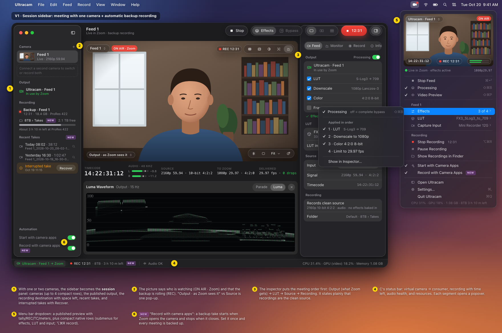
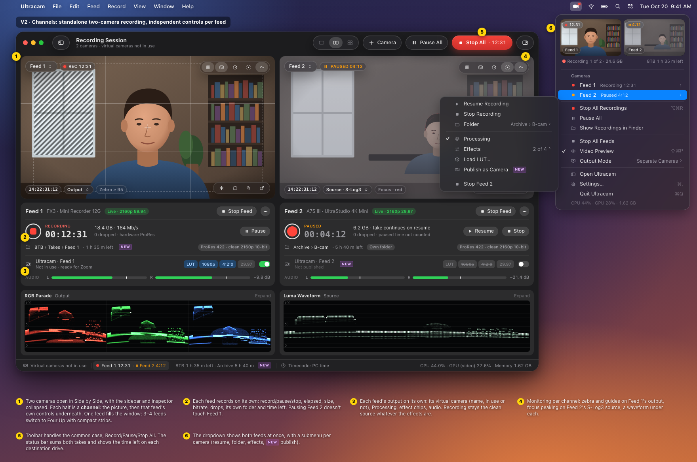
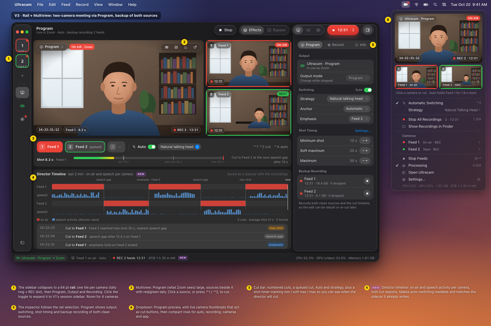
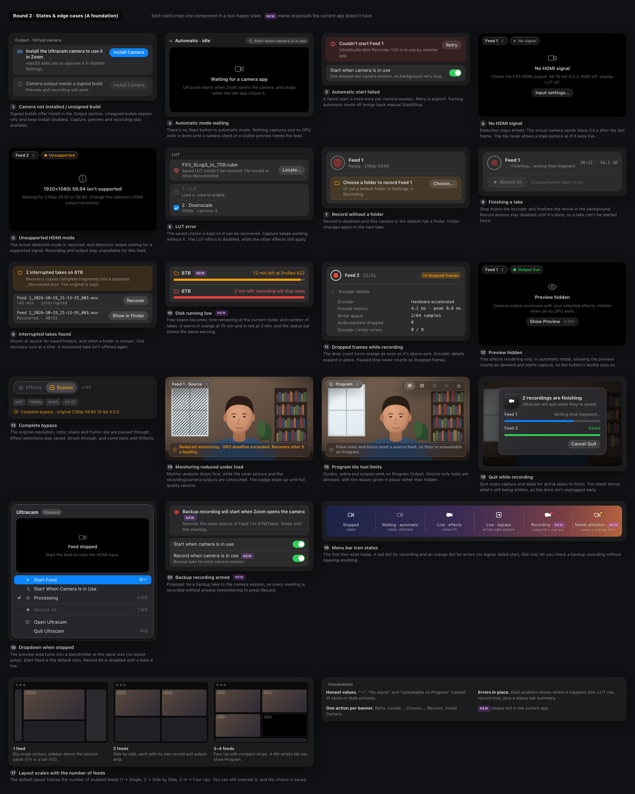
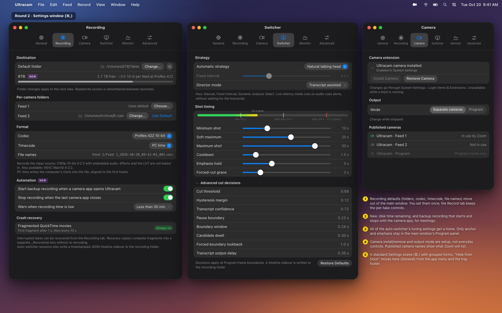

Built on round 1's A · Studio, with C's status bar and C's compact native menu rows added to A's graphical menu bar dropdown. Designed for one or two cameras most of the time, scaling to four. Proposals the current app doesn't have are marked NEW. Round 1
| V1 · Session sidebar | V2 · Channels | V3 · Rail + Multiview | |
|---|---|---|---|
| Shown with | 1 camera, meeting + backup | 2 cameras, standalone recording | 2 cameras, Program meeting + backup |
| Left side | Session panel: output, destination, takes, automation | Nothing (toggle brings back session panel) | 64 pt rail: cameras, Program, Output, Recording |
| Per-feed controls | Inspector Feed tab (selected feed) | Channel strip under each picture | Inspector follows rail selection |
| Monitoring | One big picture + scope | Two pictures, tools and scope per channel | Program + 2 sources, timeline |
| Dropdown | Published preview + rows + Effects submenu | Two previews + per-camera submenus | Program + cut thumbnails + rows |
| Trade-off | Inspector edits one feed at a time | Deep settings move to ⋯ / inspector | Densest; rail needs labels on hover |
These are layouts of one app rather than competing designs. A reasonable build would make V2's channels the Side by Side layout, V3's multiview the Program layout, and let the left column switch between the session panel and the rail.
MenuBarExtra(.menu) can't host video. Two options: an AppKit NSStatusItem + NSMenu whose first item is a custom view with the preview (real menu rows, submenus and keyboard navigation for free; needs a spike to confirm the native video layer renders inside a menu), or keep .window and draw rows that look like a menu (easy video, but submenus and keyboard navigation are hand-built). Recommendation: spike the NSMenu option first.



